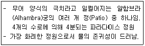
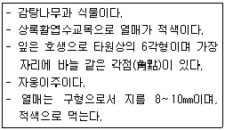
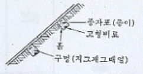
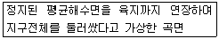

조경기능사 (2013-10-12 기출문제)
1과목: 조경일반
1. 물체의 절단한 위치 및 경계를 표시하는 선은?
- 실선
- 파선
- 1점쇄선
- 2점쇄선
(정답률: 80%)

2. 버킹검의 「스토우 가든」을 설계하고, 담장 대신 정원 부지의 경계선에 도랑을 파서 외부로부터의 침입을 막은 Ha-ha 수법을 실현하게 한 사람은?
- 켄트
- 브릿지맨
- 와이즈맨
- 챔버
(정답률: 89%)
3. 다음 설명 중 중국 정원의 특징이 아닌 것은?
- 차경수법을 도입하였다.
- 태호석을 이용한 석가산 수법이 유행하였다.
- 사의주의보다는 상징적 축조가 주를 이루는 사실주의에 입각하여 조경이 구성되었다.
- 자연경관이 수려한 곳에 인위적으로 암석과 수목을 배치하였다.
(정답률: 74%)
4. 19세기 미국에서 식민지 시대의 사유지 중심의 정원에서 공공적인 성격을 지닌 조경으로 전환되는 전기를 마련한 것은?
- 센트럴 파크
- 프랭클린 파크
- 비큰히드 파크
- 프로스펙트 파크
(정답률: 89%)
5. 우리나라에서 한국적인 색채가 농후한 정원양식이 확립되었다고 할 수 있는 때는?
- 통일신라
- 고려전기
- 고려후기
- 조선시대
(정답률: 92%)
6. 다음 정원의 개념을 잘 나타내고 있는 중정은?

- 사자의 중정
- 창격자 중정
- 연못의 중정
- Lindaraja Patio
(정답률: 80%)
7. 우리나라 고려시대 궁궐 정원을 맡아보던 곳은?
- 내원서
- 삼림원
- 장원서
- 원야
(정답률: 92%)
8. 이탈리아 정원양식의 특성과 가장 관계가 먼 것은?
- 테라스 정원
- 노단식 정원
- 평면기하학식 정원
- 축선상에 여러 개의 분수 설치
(정답률: 85%)
9. 황금비는 단변이 1일 때 장변은 얼마인가?
- 1.681
- 1.618
- 1.166
- 1.861
(정답률: 82%)
10. 다음 중 넓은 잔디밭을 이용한 전원적이며 목가적인 정원 양식은 무엇인가?
- 전원풍경식
- 회유임천식
- 고산수식
- 다정식
(정답률: 91%)
11. 미기후에 관련된 조사항목으로 적당하지 않은 것은?
- 대기오염정도
- 태양 복사열
- 안개 및 서리
- 지역온도 및 전국온도
(정답률: 70%)
12. 다음 중 점층(漸層)에 관한 설명으로 가장 적합한 것은?
- 조경재료의 형태나 색깔, 음향 등의 점진적 증가
- 대소, 장단, 명암, 강약
- 일정한 간격을 두고 흘러오는 소리, 다변화 되는 색채
- 중심축을 두고 좌우 대칭
(정답률: 78%)
13. 안정감과 포근함 등과 같은 정적인 느낌을 받을 수 있는 경관은?
- 파노라마 경관
- 위요 경관
- 초점 경관
- 지형 경관
(정답률: 84%)
14. 골프장에 사용되는 잔디 중 난지형 잔디는?
- 들잔디
- 벤트그라스
- 켄터키블루그라스
- 라이그라스
(정답률: 68%)
15. 주축선을 따라 설치된 원로의 양쪽에 짙은 수림을 조성하여 시선을 주축선으로 집중시키는 수법을 무엇이라 하는가?
- 테라스(terrace)
- 파티오(patio)
- 비스타(vista)
- 퍼골러(pergola)
(정답률: 88%)
2과목: 조경재료
16. 감탕나무과(Aquilofiacoae)에 해당하지 않는 것은?
- 호랑가시나무
- 먼나무
- 꽝꽝나무
- 소태나무
(정답률: 67%)
17. 시멘트의 응결에 대한 설명으로 옳지 않은 것은?
- 시멘트와 물이 화학반응을 일으키는 작용이다.
- 수화에 의하여 유동성과 점성을 상실하고 고화하는 현상이다.
- 시멘트 겔이 서로 응집하여 시멘트입자가 치밀하게 채워지는 단계로서 경화하여 강도를 발휘하기 직전의 상태이다.
- 저장 중 공기에 노출되어 공기 중의 습기 및 탄산가스를 흡수하여 가벼운 수화반응을 일으켜 탄산화하여 고화되는 현상이다.
(정답률: 66%)
18. 다음 중 훼손지비탈면의 초류증자 살포(종비토뿡어문어기)와 가장 관계 없는 것은?
- 종자
- 생육기반재
- 지효성비료
- 농약
(정답률: 86%)
19. 다음 중 공기 중에 환원력이 커서 산화가 쉽고, 이온화 경향이 가장 큰 금속은?
- Pb
- Fe
- Al
- Cu
(정답률: 55%)
20. 인조목의 특징이 아닌 것은?
- 마모가 심하여 파손되는 경우가 많다.
- 제작시 숙련공이 다루지 않으면 조잡한 제품을 생산하게 된다.
- 안료를 잘못 배합하면 표면에서 분말이 나오게 되어 시각적으로 좋지 않고 이용에도 문제가 생긴다.
- 목재의 질감은 표출되지만 목재에서 느끼는 촉감을 맛볼 수 없다.
(정답률: 65%)
21. 우리나라에서 식물의 천연분포를 결정짓는 가장 주된 요인은?
- 광선
- 온도
- 바람
- 토양
(정답률: 73%)
22. 수목의 여러가지 이용 중 단풍의 아름다움을 관상하려 할 때 적합하지 않은 수종은?
- 신나무
- 칠엽수
- 화살나무
- 팥배나무
(정답률: 49%)
23. 돌을 뜰 때 앞면, 뒷면, 길이 접촉부 등의 치수를 지정해서 깨낸 돌을 무엇이라 하는가?
- 견치돌
- 호박돌
- 사괴석
- 평석
(정답률: 85%)
24. 재료가 탄성한계 이상의 힘을 받아도 파괴되지 않고 가늘고 길게 늘어나는 성질은?
- 취성(脆性)
- 인성( 靭性)
- 연성(延性)
- 전성(展性)
(정답률: 77%)
25. 화강암(granite)에 대한 설명 중 옳지 않은 것은?
- 내마모성이 우수하다.
- 구조재로 사용이 가능하다.
- 내화도가 높아 가열시 균열이 적다.
- 절리의 거리가 비교적 커서 큰 판재를 생산할 수 있다
(정답률: 73%)
26. 해사 중 염분이 허용한도를 넘을 때 철근콘크리트의 조치 방안으로서 옳지 않은 것은?
- 아연도금 철근을 사용한다.
- 방청제를 사용하여 철근의 부식을 방지한다.
- 살수 또는 침수법을 통하여 염분을 제거한다.
- 단위시멘트량이 적은 빈배합으로 하여 염분과의 반응성을 줄인다.
(정답률: 65%)
27. 일반적으로 봄 화단용 꽃으로만 짝지어진 것은?
- 맨드라미, 국화
- 데이지, 금잔화
- 샐비어, 색비름
- 칸나, 메리골드
(정답률: 72%)
28. 다음 중 조경수목의 생장 속도가 빠른 수종은?
- 둥근향나무
- 감나무
- 모과나무
- 삼나무
(정답률: 67%)
29. 호랑가시나무(감탕나무과)의 목서(물푸레나무과)의 특징 비교 중 옳지 않은 것은?
- 목서의 꽃은 백색으로 9~10월에 계화한다.
- 호랑가시나무의 잎은 마주나며 엷고 윤택이 없다.
- 호랑가시나무의 열매는 지름 0.8~1.0㎝로 9~10월에 적색으로 익는다.
- 목서의 열매는 타원형으로 이듬해 10월경에 망자색으로 익는다.
(정답률: 67%)
30. 합성수지에 관한 설명 중 잘못된 것은?
- 기밀성, 접착성이 크다.
- 비중에 비하여 강도가 크다.
- 착색이 자유롭고 가공성이 크므로 장식적 마감재에 적합하다.
- 내마모성이 보통 시멘트콘크리트에 비교하면 극히 적어 바닥 재료로는 적합하지 않다.
(정답률: 73%)
31. 목재의 구조에는 춘재와 추재가 있는데 추재(秋材)를 바르게 설명한 것은?
- 세포는 막이 얇고 크다.
- 빛깔이 엷고 재질이 연하다.
- 빛깔이 짙고 재질이 치밀하다.
- 춘재보다 자람의 폭이 넓다.
(정답률: 82%)
32. 다음 중 황색의 꽃을 갖는 수목은?
- 모감주나무
- 조팝나무
- 박태기나무
- 산철쭉
(정답률: 72%)
33. 다음 중 방풍용수의 조건으로 옳지 않은 것은?
- 양질의 토양으로 주기적으로 이식한 친근성 수목
- 일반적으로 견디는 힘이 큰 낙엽활엽수보다 상록활엽수
- 파종에 의해 자란 자생수종으로 직근(直根)을 가진 것
- 대표적으로 소나무, 가시나무, 느티나무 등임.
(정답률: 68%)
34. 점토제품 제조를 위한 소성(燒成) 공정순서로 맞는 것은?
- 예비처리-원료조합-반죽-숙성-성형-시유(施蚰)-소성
- 원료조합-반죽-숙성-예비처리-소성-성형-시유
- 반죽-숙성-성형-원료조합-시유-소성-예비처리
- 예비처리-반죽-원료조합-숙성-시유-성형-소성
(정답률: 64%)
35. 다음 설명에 적합한 수목은?

- 감탕나무
- 낙상홍
- 먼나무
- 호랑가시나무
(정답률: 64%)
3과목: 조경 시공 및 관리
36. 조경시설물의 관리원칙으로 옳지 않은 것은?
- 여름철 그늘이 필요한 곳에 차광시설이나 녹음수를 식재한다.
- 노인, 주부 등이 오랜 시간 머무는 곳은 가급적 석재를 사용한다.
- 바닥에 물이 고이는 곳은 배수시설을 하고 다시 포장한다.
- 이용자의 사용빈도가 높은 것은 충분히 조이거나 용접한다.
(정답률: 89%)
37. 수목의 전정작업 요령에 관한 설명으로 옳지 않은 것은?
- 상부는 가볍게, 하부는 강하게 한다.
- 우선 나무의 정상부로부터 주지의 전정을 실시한다.
- 전정작업을 하기 전 나무의 수형을 살펴 이루어질 가지의 배치를 염두에 둔다.
- 주지의 전정은 주간에 대해서 사방으로 고르게 굵은가지를 배치하는 동시에 상하(上下)로도 적당한 간격으로 자리잡도록 한다.
(정답률: 74%)
38. 개화를 촉진하는 정원수 관리에 관한 설명으로 옳지 않은 것은?
- 햇빛을 충분히 받도록 해준다.
- 물을 되도록 적게 주어 꽃눈이 많이 생기도록 한다.
- 깻묵, 닭똥, 요소, 두엄 등을 15일 간격으로 시비한다.
- 너무 많은 꽃봉오리는 솎아낸다.
(정답률: 64%)
39. 다음 중 일반적으로 전정시 제거해야 하는 가지가 아닌 것은?
- 도장한 가지
- 바퀴살 가지
- 얽힌 가지
- 주지(主枝)
(정답률: 90%)
40. 콘크리트의 재료분리현상을 줄이기 위한 방법으로 옳지 않은 것은?
- 플라이애시를 적당량 사용한다.
- 세장한 골재보다는 둥근골재를 사용한다.
- 중량골재와 경량골재 등 비중차가 큰 골재를 사용한다.
- AE제나 AE감수제 등을 사용하여 사용수량을 감소시킨다.
(정답률: 58%)
41. 다음 그림과 같은 비탈면 보호공의 공종은?

- 식생구멍공
- 식생자루공
- 식생매트공
- 줄떼심기공
(정답률: 70%)
42. 일반적으로 근원 직경이 10㎝인 수목의 뿌리분을 뜨고자 할 때 뿌리분의 직경으로 적당한 크기는?
- 20㎝
- 40㎝
- 80㎝
- 120㎝
(정답률: 88%)
43. 마운딩(maunding)의 기능으로 옳지 않은 것은?
- 유효 토심확보
- 배수 방향 조절
- 공간 연결의 역할
- 자연스러운 경관 연출
(정답률: 67%)
44. 수목의 키를 낮추려면 다음 중 어떠한 방법으로 전정하는 것이 가장 좋은가?
- 수맥이 유동하기 전에 약전정을 한다.
- 수맥이 유동한 후에 약전정을 한다.
- 수맥이 유동하기 전에 강전정을 한다.
- 수맥이 유동한 후에 강전정을 한다.
(정답률: 74%)
45. 꺾꽂이(삽목)번식과 관련된 설명으로 옳지 않은 것은?
- 왜성화할 수도 있다.
- 봄철에는 새싹이 나오고 난 직후에 실시한다.
- 실생묘에 비해 개화ㆍ결실이 빠르다.
- 20~30℃의 온도와 포화상태에 가까운 습도 조건이면 항시 가능하다.
(정답률: 50%)
46. 홉즘성 해충의 분비물로 인하여 발생하는 병은?
- 흰가루병
- 혹병
- 그을음병
- 점무늬병
(정답률: 77%)
47. 다음 중 토양수분의 형태적 분류와 설명이 옳지 않은 것은?
- 결합수(結合水) - 토양 줄의 화합물의 한 성분
- 흡습수(吸濕水) - 흡착되어 있어서 식물이 이용하지 못하는 수분
- 모관수(毛管水) - 식물이 이용할 수 있는 수분의 대부분
- 중력수(重力水) - 중력에 내려가지 않고 표면장력에 의하여 토양입자에 붙어있는 수분
(정답률: 65%)
48. 측량에서 활용되는 다음 설명의 곡면은?

- 타원체면
- 지오이드면
- 물리적 지표면
- 회전타원체면
(정답률: 72%)
49. 벽 뒤로부터의 토양에 의한 붕괴를 막기 위한 공사는?
- 옹벽쌓기
- 기슭막이
- 견치석쌓기
- 호안공
(정답률: 80%)
50. 조경현장에서 사고가 발생하였다고 할 때 응급조치를 잘못 취한 것은?
- 기계의 작동이나 전원을 단절시켜 사고의 진행을 막는다.
- 현장에 관중이 모이거나 흥분이 고조되지 않도록 하여야 한다.
- 사고 현장은 사고 조사가 끝날 때까지 그대로 보존하여 두어야 한다.
- 상해자가 발생시는 관계 조사관이 현장을 확인 보존 후 이후 전문의의 치료를 맡게 한다.
(정답률: 84%)
51. 과습지역 토양의 물리적 관리 방법이 아닌 것은?
- 암거배수 시설설치
- 명거배수 시설설치
- 토양치환
- 석회사용
(정답률: 75%)
52. 잎응애(spider mite)에 관한 설명으로 옳지 않은 것은?
- 절지동물로서 기미강에 속한다.
- 무당벌레, 풀잠자리, 거미 등의 천적이 있다.
- 5월부터 세심히 관찰하여 약충이 발견되면, 다이아지논입체 등 살충제를 살포한다.
- 육안으로 보이지 않기 때문에 응해피해를 다른 병으로 잘못 진단하는 경우가 자주 있다.
(정답률: 54%)
53. 단풍나무를 식재 적기가 아닌 여름에 옮겨 심을 때 실시해야 하는 작업은?
- 뿌리분을 크게 하고, 잎을 모조리 따내고 식재
- 뿌리분을 적게 하고, 가지를 잘라낸 후 식재
- 굵은 뿌리는 자르고, 가지를 솎아내고 식재
- 잔뿌리 및 굵은 뿌리를 적당히 자르고 식재
(정답률: 72%)
54. 벽면적 4.8㎡ 크기에 1.5B 두께로 붉은 벽돌을 쌓고자 할 때 벽돌의 소용매수는? (단, 줄눈의 두께는 10㎜이고, 할증률을 고려한다.)
- 925매
- 963매
- 1109매
- 1245매
(정답률: 62%)
55. 잔디의 잎에 갈색 냉반이 동그랗게 생기고, 특히 6~9월경에 벨트 그라스에 주로 나타나는 병해는?
- 녹병
- 황화병
- 브라운패치
- 설부병
(정답률: 54%)
56. 각 재료의 할증률로 맞는 것은?
- 이형철근 : 5%
- 강판 : 12%
- 경계블록(벽돌) : 5%
- 조경용수목 : 10%
(정답률: 79%)
57. 소나무류는 생장조절 및 수형을 바로잡기 위하여 순따기를 실시하는데 대략 어느 시기에 실시하는가?
- 3~4월
- 5~6월
- 9~10월
- 11~12월
(정답률: 86%)
58. 다음 중 호박돌 쌓기에 이용되는 쌓기법으로 가장 적합한 것은?
- +자 줄눈 쌓기
- 줄눈 어긋나게 쌓기
- 이음매 경사지게 쌓기
- 평석 쌓기
(정답률: 77%)
59. 흙은 같은 양이라 하더라도 자연상태(N)와 흐트러진 상태(S), 인공적으로 다져진 상태(H)에 따라 각각 그 부피가 달라진다. 자연상태의 흙의 부피(N)를 1.0으로 할 경우 부피가 큰 순서로 적당한 것은?
- H > N > S
- N > H > S
- S > N > H
- S > H > N
(정답률: 71%)
60. 콘크리트의 크리프(creep) 현상 관한 설명으로 옳지 않은 것은?
- 부재의 건조 정도가 높을수록 크리프는 증가된다.
- 잉생, 보임이 나쁠수록 크리프는 증가한다.
- 온도가 높을수록 크리프는 증가한다.
- 단위수량이 적을수록 크리프는 증가한다.
(정답률: 57%)